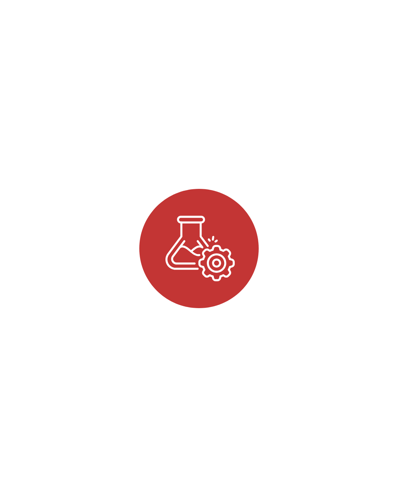
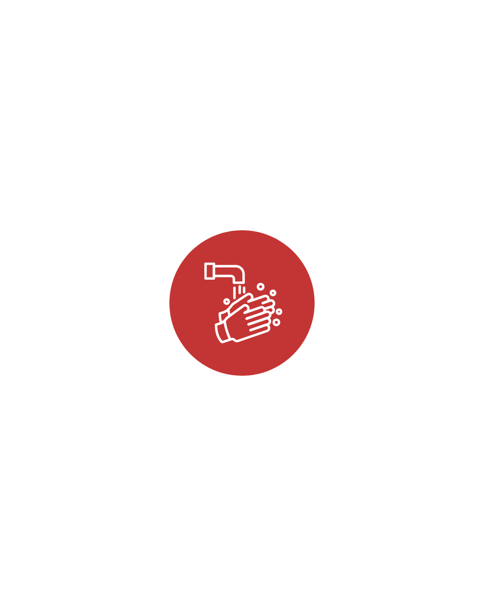
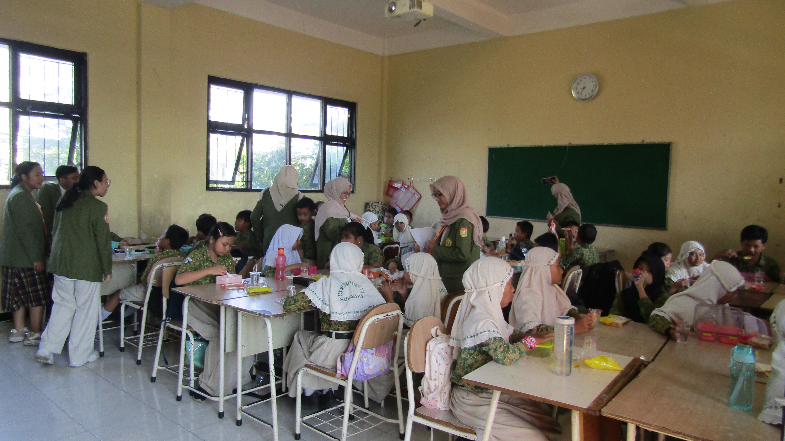
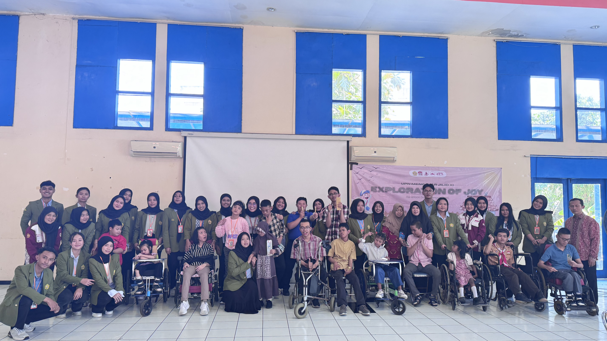
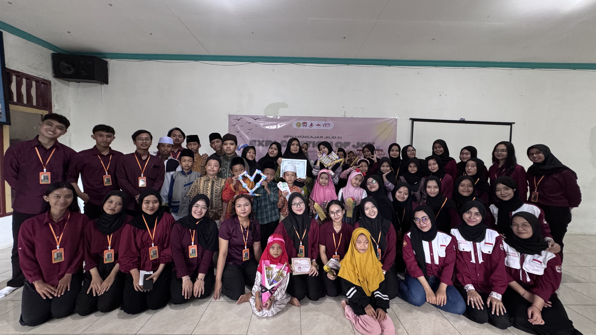

Pembelajaran Interaktif
Relawan memberikan materi pembelajaran kepada siswa dengan metode yang menarik sehingga kegiatan belajar menjadi lebih menyenangkan.
Program Pengabdian Pendidikan UKM Penalaran dan Kreativitas UPN Veteran Jawa Timur
Program Pengabdian Pendidikan oleh UKM Penalaran dan Kreativitas UPN Veteran Jawa Timur.
Program ini bertujuan memberikan pengalaman belajar yang interaktif dan aplikatif kepada siswa melalui kegiatan pembelajaran dan praktik langsung.
UPN Mengajar merupakan program pengabdian masyarakat di bidang pendidikan yang diselenggarakan oleh Bidang Pendidikan Sosial UKM Penalaran dan Kreativitas UPN Veteran Jawa Timur.
Program ini mendukung tujuan pembangunan berkelanjutan khususnya SDGs 4 yaitu Quality Education dengan menghadirkan kegiatan pembelajaran yang interaktif serta berbasis praktik.
Melalui kegiatan ini mahasiswa dapat berkontribusi kepada masyarakat sekaligus mengembangkan kemampuan komunikasi, kepemimpinan, serta pengalaman mengajar secara langsung.
Relawan memberikan materi pembelajaran kepada siswa dengan metode yang menarik sehingga kegiatan belajar menjadi lebih menyenangkan.

Siswa diajak melakukan percobaan sederhana agar dapat memahami konsep pembelajaran secara langsung melalui praktik.

Salah satu kegiatan yang dilakukan adalah edukasi mengenai pentingnya menjaga kebersihan seperti praktik mencuci tangan yang benar.
Sebelum kegiatan dilaksanakan, panitia melakukan rapat koordinasi untuk menyusun konsep kegiatan, pembagian tugas, serta penyusunan rencana anggaran kegiatan (RAB).
Relawan juga mengikuti kegiatan micro teaching serta pelatihan sebagai persiapan sebelum terjun langsung ke lokasi kegiatan.
Kegiatan UPN Mengajar dilaksanakan secara langsung di lokasi pendidikan seperti sekolah, yayasan, atau mitra pendidikan lainnya.
Relawan memberikan materi pembelajaran serta kegiatan praktik interaktif kepada peserta didik agar proses belajar menjadi lebih menarik dan mudah dipahami.
Setelah kegiatan selesai, panitia melakukan evaluasi untuk menilai pelaksanaan program serta mengidentifikasi hal-hal yang dapat diperbaiki pada kegiatan berikutnya.
Evaluasi ini bertujuan meningkatkan kualitas kegiatan UPN Mengajar agar memberikan manfaat yang lebih baik bagi peserta didik.
Tertarik untuk ikut berkontribusi dalam program ini?
Daftar RelawanBerikut beberapa momen kegiatan UPN Mengajar bersama para relawan dan peserta didik di berbagai lokasi.



